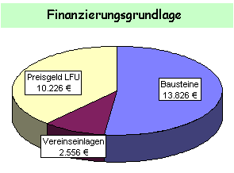
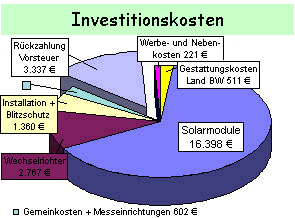
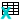

Schönes Dorf Mindersbach
Schönes Dorf MindersbachFinanzierung der Solaranlage
Finanzierungsplan aus dem Vereinsarchiv.
Unser Engagement zum Bau der Solarstromanlage ist darin begründet einen Beitrag zur Bewahrung der Schöpfung zu leisten und den Bürgern aufzuzeigen, dass es möglich und sinnvoll ist mit Hilfe der Sonne nutzbare Energie zu erzeugen.
|
 |
 |
Den Grundstock für die Finanzierung bildet deshalb die Beteiligung der Mindersbacher Bürgerinnen und Bürger durch zunächst zinnslose Darlehen, die wir in Form von Bausteinen realisiert haben.
Den zweiten Pfeiler für die Finanzierung bildet das zinsgünstige Darlehen aus dem 100.000-Dächerprogramm der Bundesregierung. Einen weiteren Grundstock für die solide Durchfinanzierung stellt eine Einlage aus dem Vereinsvermögen dar.
Mit dem Förderpreis des Umweltministeriums Baden-Württemberg im Rahmen der Auszeichnung von „konkreten Projekten zur lokalen Agenda 21” haben wir eine weitere Finanzierungshilfe erhalten, mit der das Projekt auf einem festen finanzellen Fundament steht.

Finanzierungsplan